Інструкція • Збережіть PDF із Quizlet, імпортуйте у веб-версії або в застосунку
Експорт у текст/CSV у Quizlet платний. Безкоштовний обхідний шлях — власна функція Quizlet Print, яка перетворює будь-який набір на PDF. Atom Translate читає цей PDF і сам витягує з нього терміни та переклади.
Імпорт працює і у веб-версії на app.atomtranslate.com (зараз у беті), і в застосунку Atom Translate на Android та iOS. Кроки однакові.
Коротко:
На quizlet.com: відкрийте набір → ⋯ → Print → залиште макет Table → збережіть PDF
Робіть це на комп'ютері або на Android — файл буде той самий. На iPhone це неможливо взагалі; чому — нижче.
На комп'ютері
Відкрийте набір на quizlet.com і натисніть ⋯ у правому верхньому куті.
Виберіть Print.
У попередньому перегляді залиште ліворуч макет Table — саме його читає Atom Translate — і натисніть іконку завантаження на панелі перегляду. Системне вікно друку не потрібне.
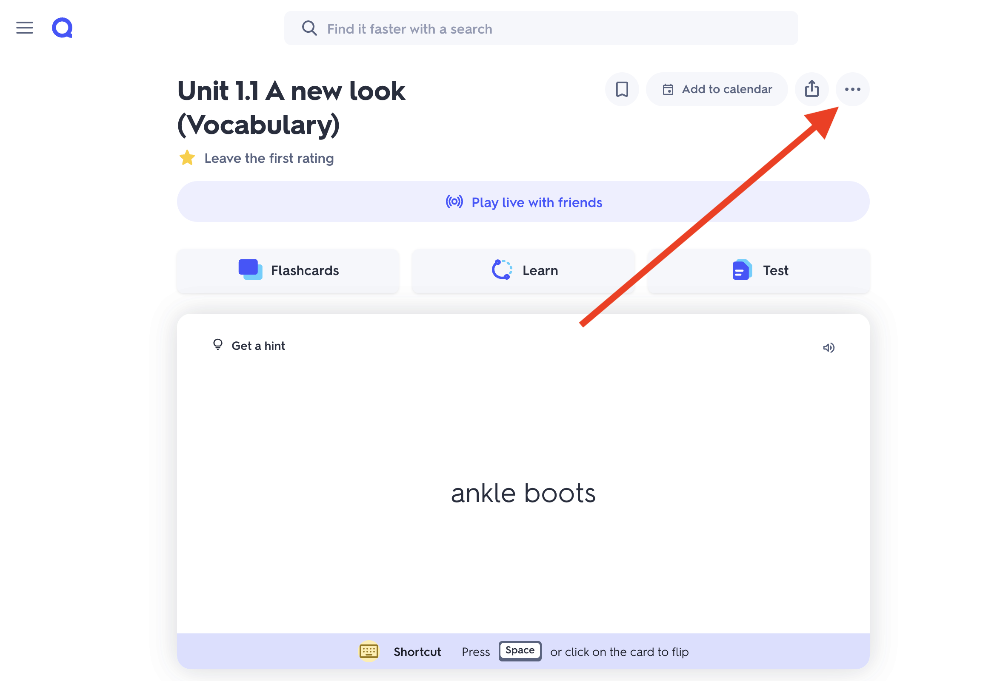
Натисніть меню «⋯».
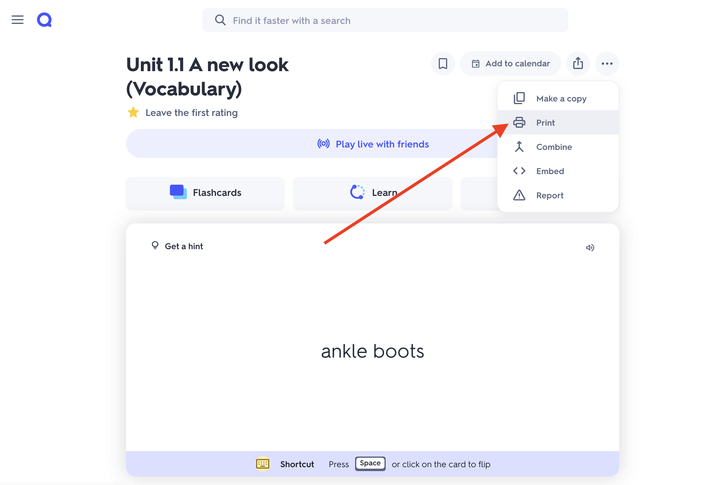
Виберіть «Print».
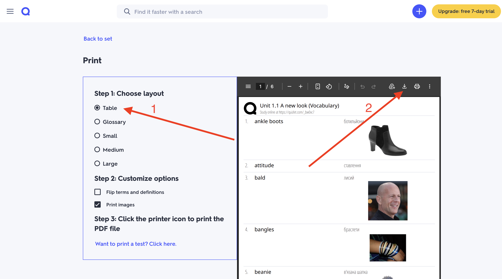
Залиште «Table» і натисніть іконку завантаження.
На Android — через Firefox
У Firefox є повноцінний режим Версія для комп'ютера, тож сторінка друку Quizlet відкривається як на ПК — з кнопкою Download, яка зберігає той самий табличний PDF. Інші браузери на Android передають сторінку системному вікну друку, а воно дає файл з іншою версткою.
Відкрийте набір у Firefox і натисніть ⋮ у правому нижньому куті.
Увімкніть Версія для комп'ютера — сторінка перезавантажиться в десктопному вигляді.
Натисніть ⋯ на наборі, тоді Print («Печать»).
Залиште макет Table і натисніть Download над переглядом. PDF збережеться в «Завантаження».
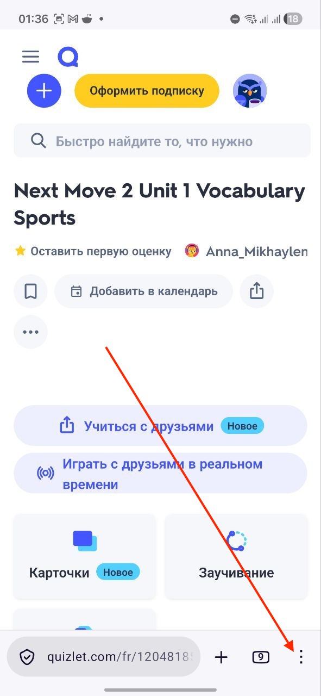
Натисніть «⋮» у Firefox.
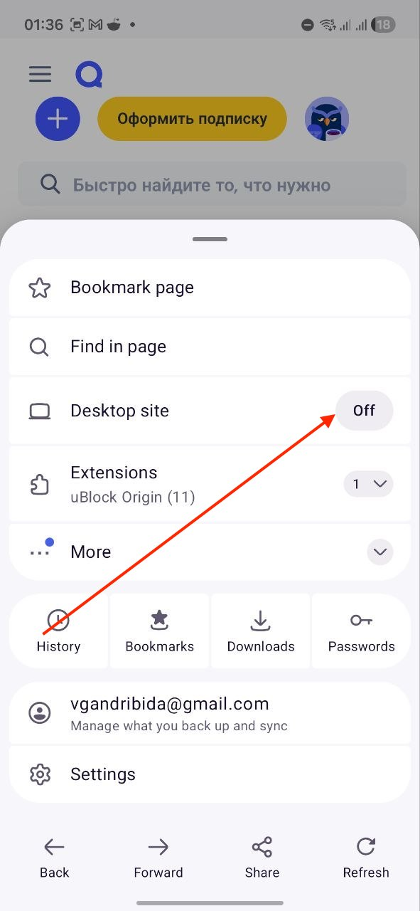
Увімкніть «Desktop site».
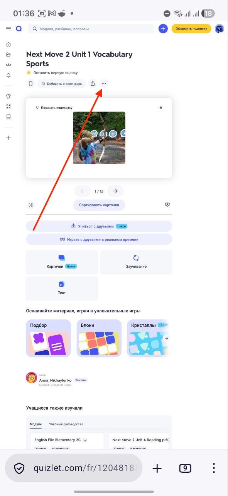
У десктопному вигляді натисніть «⋯».
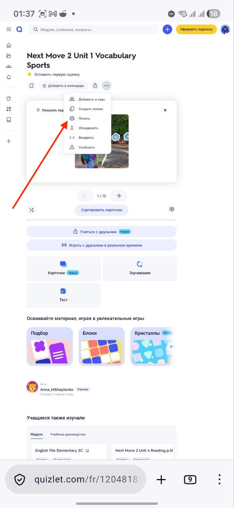
Виберіть «Print».
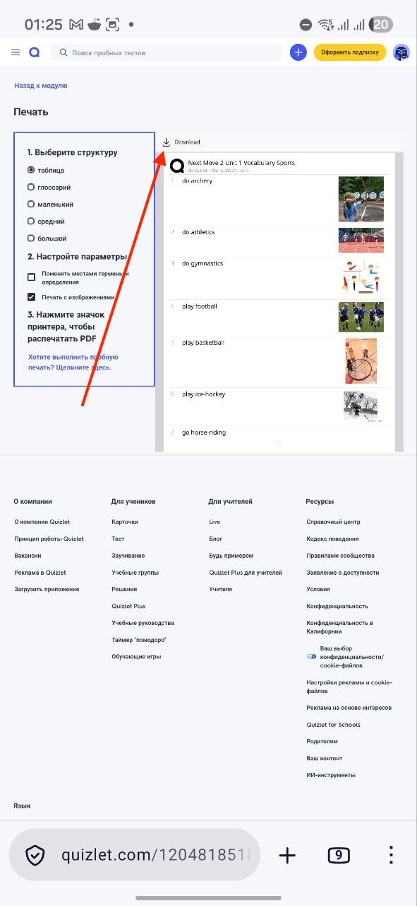
Залиште «Table» і натисніть «Download».
На iPhone та iPad — Quizlet не створює PDF
На iOS отримати цей PDF неможливо: у застосунку Quizlet для iPhone взагалі немає пункту Print, а на quizlet.com у Safari завантаження зі сторінки друку не зберігає придатний файл. Це обмеження з боку Quizlet, а не Atom Translate — ми можемо лише прочитати файл, який Quizlet погоджується згенерувати, а на iOS він його не генерує.
Що робити: створіть PDF на комп'ютері або на Android, а тоді або імпортуйте його у веб-версії — телефон узагалі не знадобиться — або перешліть файл на iPhone і імпортуйте в застосунку. Сам імпорт на iOS працює нормально; не працює лише експорт із Quizlet.
2
Імпортуйте PDF у веб-версії
Відкрийте app.atomtranslate.com і увійдіть своїм звичайним акаунтом. Якщо PDF на цьому ж комп'ютері — це найшвидший шлях, телефон не потрібен.
Веб-версія в беті: більшість речей працює, але можливі шорсткості. Застосунок на телефоні (крок 3) — повністю релізний варіант.
У Library відкрийте папку, куди хочете додати слова.
Натисніть ⋯ → Import from Quizlet.
Натисніть Choose exported PDF file... і виберіть PDF. За бажання увімкніть Import with pictures, щоб перенести й картинки — це помітно довше.
Перевірте розпізнані пари «термін — переклад»; виправте помилки або приберіть рядок кнопкою ×.
Натисніть Import [кількість] words. Слова автоматично синхронізуються з телефоном.
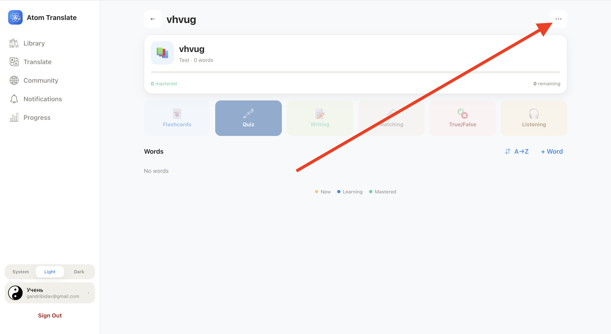
Відкрийте папку й натисніть «⋯».
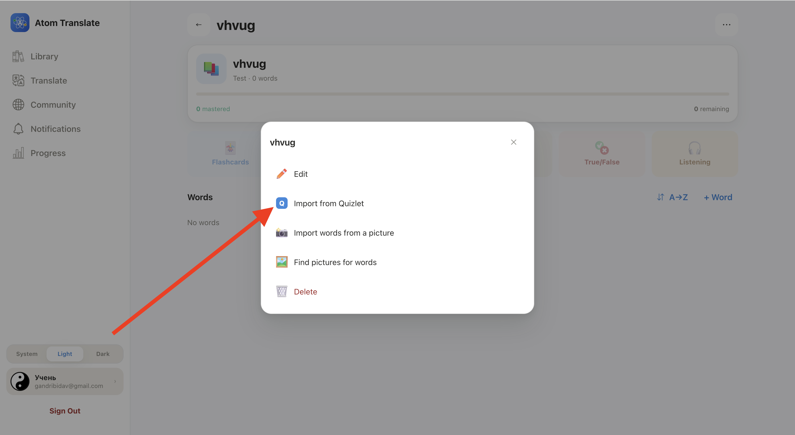
Виберіть «Import from Quizlet».
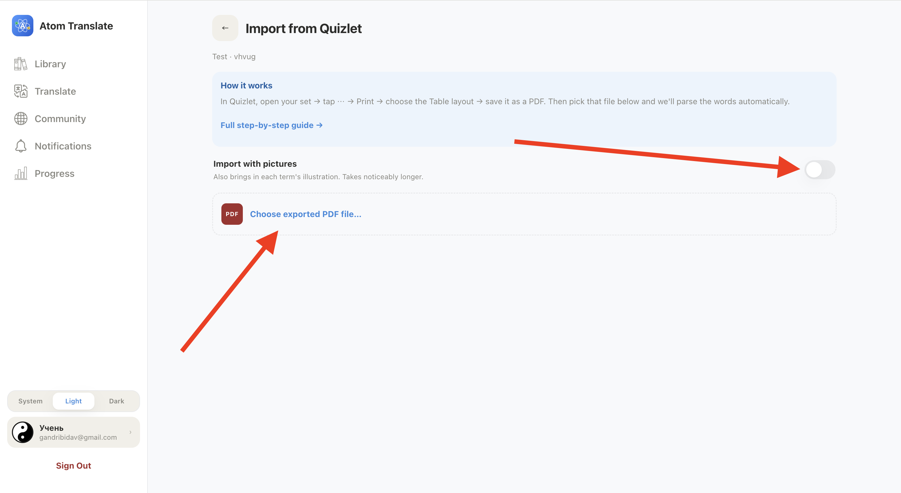
Виберіть PDF — картинки за бажанням.
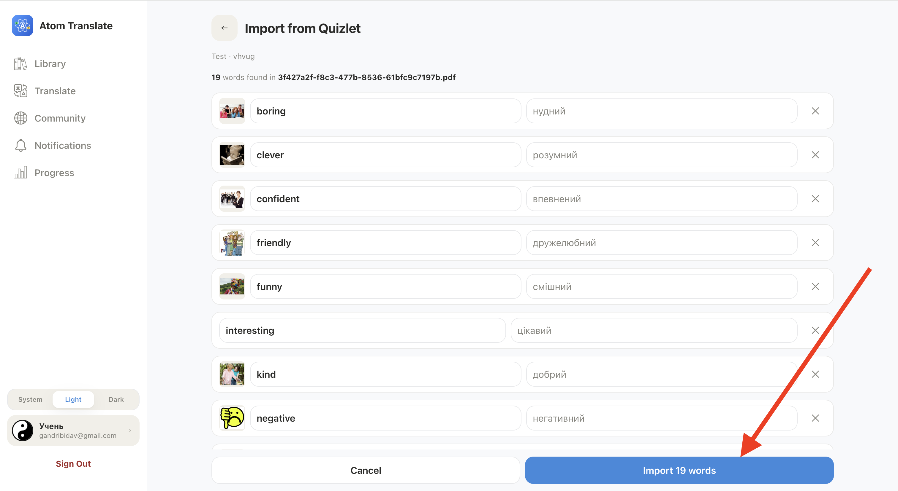
Перевірте й натисніть «Import».
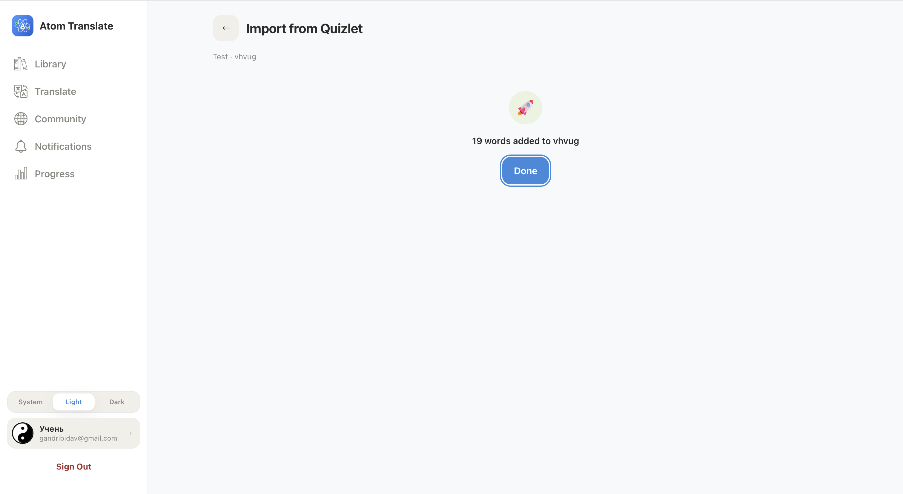
Готово — слова у вашій папці.
3
Або імпортуйте PDF у застосунку
У застосунку все так само. Якщо PDF створено на комп'ютері, спершу перенесіть його на телефон — листом собі, через хмару або AirDrop / Nearby Share.
Відкрийте папку й натисніть ⋯ → Import from Quizlet.
Натисніть Choose exported PDF file... і виберіть PDF із «Завантажень» або «Файлів».
На екрані Review words зніміть позначки з того, що не потрібно.
Натисніть Import [кількість] words — слова одразу з'являться в папці.
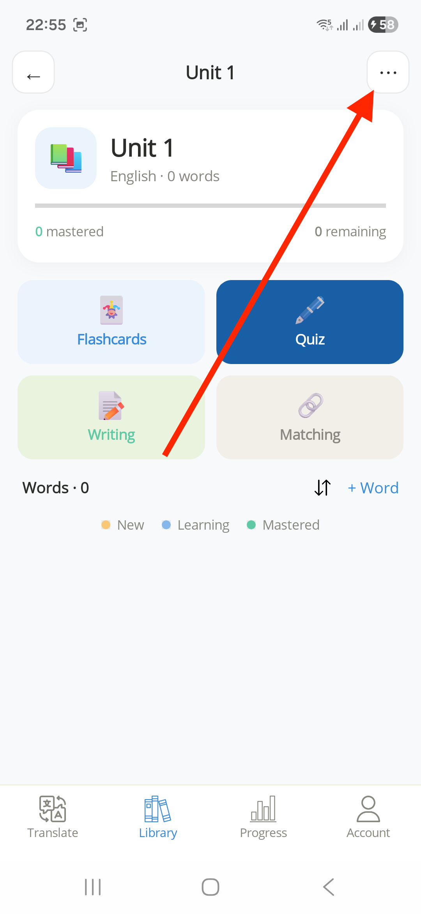
Натисніть «⋯» у папці.
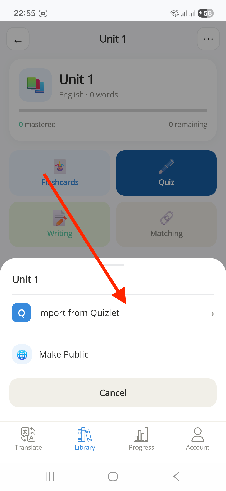
Натисніть «Import from Quizlet».
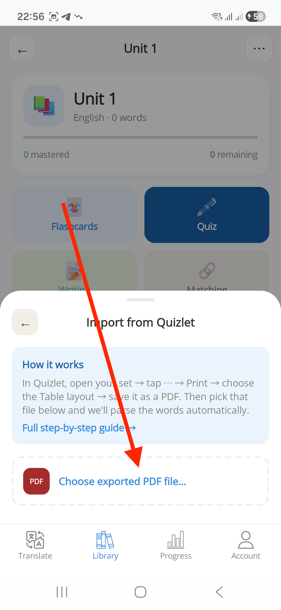
Виберіть файл PDF.
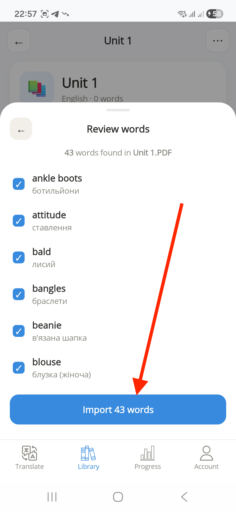
Перевірте й натисніть «Import».
Поради
Завжди залишайте макет Table — інші макети можуть розпізнатися неправильно.
На Android експортуйте у Firefox з версією для комп'ютера — отримаєте той самий PDF, що й на ПК.
PDF має бути текстовим — знімок екрана з набором не підійде.
Перевірте список перед підтвердженням; слова можна відредагувати й пізніше в бібліотеці.
Якщо щось не так
У меню немає «Import from Quizlet»
Відкривайте меню ⋯ усередині папки, а не на головному екрані бібліотеки. Якщо пункту все одно немає — оновіть застосунок або напишіть у підтримку.
Частини слів немає або вони неправильні
Зазвичай PDF експортували не з макетом Table. Експортуйте ще раз із вибраним Table і спробуйте знову.
Atom Translate не може прочитати файл
Це має бути справжній PDF із функції Print у Quizlet — не знімок екрана, не документ Word і не перейменований файл.
У мене тільки iPhone
Quizlet на iOS узагалі не створює цей PDF (див. крок 1). Експортуйте його на комп'ютері чи на Android, а тоді імпортуйте у веб-версії або перешліть на iPhone.